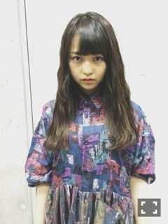
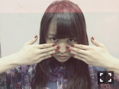
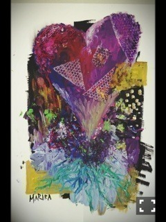
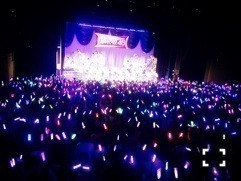
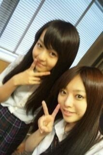
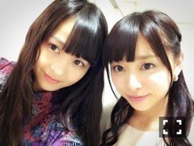

| 2014/10 22 Wed | 暖色の海。609回目 |
まずは握手会！
来てくださったみなさん
ありがとうございました。

シャツワンピース PANAMABOY
靴 Dr.Martens

3枚のシルクのシャツを繋げた
リメイクワンピース。
ダークな色合い。
コスプレしないあたり
万理華らしくて良いねと
言ってくれてありがとう←
マネージャーさんに
万理華はアダムスファミリー
似合うと言われました。
ウェンズデー！

ほとんどアンダーライブの感想で、
たくさんの方が来てくれたんだなあ
と感動しておりました。
Tシャツ率高し！
私も今回のTシャツお気に入りだ。
来てくださったみなさん
ありがとうございました！
この日、里沙子と京ちゃんが
卒業しました。
2人とは9thのアンダーライブの
思い出が強いです。
リハで二期生を
しっかりまとめてた里沙子。
泣きながらも一生懸命
頑張ってた京ちゃん。
学業も両立しながら
大変だったと思います。
でも新たな夢に向かって
頑張ってほしいです！
......
アンダーライブ18公演
すべて終了しました。
9thとは全く異なった
魅せるパフォーマンス。
乃木坂としては新鮮だったと思うけど
今後もこういうパフォーマンス
たくさんやりたいですね。
18公演のロングラン。
また喉を潰してしまうんじゃないか
恐怖心でいっぱいでしたが、
怪我もなく、健康な状態で
無事に終了しました。
最後にはちゃんと
全員揃って良かった。
自分の中でひとつ課題にしていた
ダンスは、家族からも変わったね
と言われて嬉しかったなあ。
初めて挑戦した企画1人MCでは
絵を披露させていただきました。

感謝の気持ちを込めて！
ロビーに飾ってたみたい。
見た方もいるかな？
あともう一枚は寧々の似顔絵。
毎公演袖で見守ってくださる
スタッフさん、上でずっと
カメラ回してるスタッフさんが
スペシャル公演でサイリウムを
振って応援してくれました。
スタッフのみなさん、
長期間、本当にご苦労様でした。
ありがとうございました！

ベタな言い方かもしれないけど、
ファンの皆さんも含め、
メンバースタッフさん全員の
汗と涙が詰まったライブでした。

自分にとってこの期間が
どれだけ大きなものだったのか。
いろんな反動が起きました。
完全燃焼だな！
今回のアンダーライブで
活動が最後だった寧々。
握手会後の卒業セレモニーでは
手紙を読ませていただきました。
そして、スペシャル公演では
最後のお願いに孤独兄弟を歌って、
1人MCで披露した寧々の似顔絵に
寄せ書きのプレゼント。
図々しかったかもしれません。
ライバルとして高め合い、
いろんなことを教えてくれました。
たくさん困らせて、迷惑かけました。
たくさんありがとう。

初の2ショット

随分柔らかくなった2人
正反対な私たちだからこそ、
伊藤ちゃんずは
ここまで愛されました。
伊藤ちゃんずを愛してくれて
ありがとうございました。

寧々、これからもずっとよろしく！
まりか
コメント(682)
2014/10/22 15:00